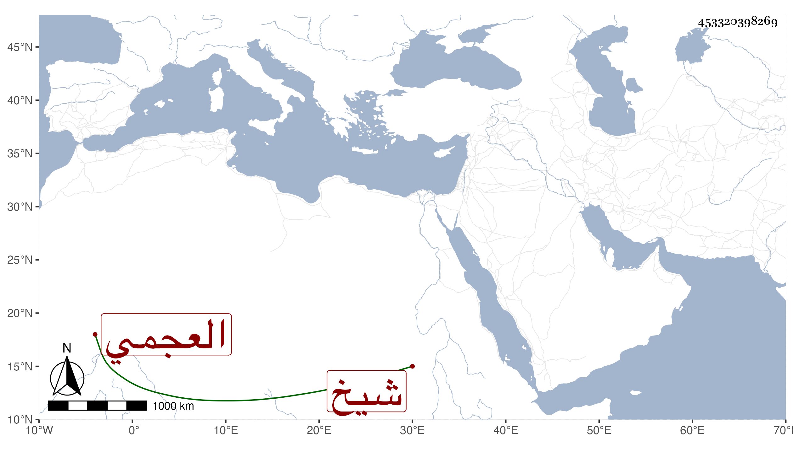

0902Sakhawi.DawLamic.ITO20230111-ara1.EIS1600.453320398269
Biography ID: 453320398269
531
حسن العجمي شيخ زاوية بباب الوزير . ممن كان يصحب شاهين الغزالي . رأيته كتب على مجموع البدري من قوله : )
| لله مجموع بديع حوى | جواهرا تلمع في عقدها |
| كادت مجاميع الورى عنده | تموت للخشية في جلدها |
وقوله :
| ومجموع به أبيات شعر | ولكن كل بيت مثل قصر |
| بنظم كاللآلي لم أجده | لعمر أبيك في مجموع عمري |
